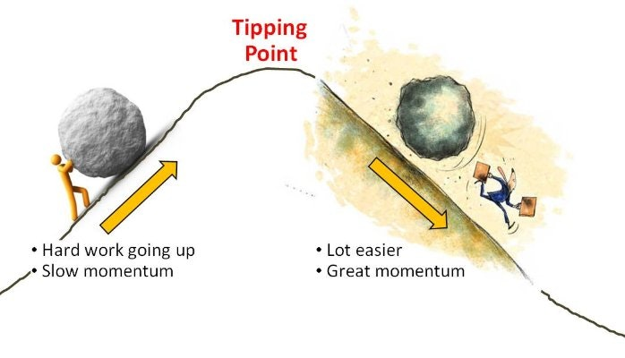

Matrix of Thoughts
Matrix of Thoughts
The Tipping Point
There comes a moment when ideas, trends and social behaviour cross a threshold and suddenly spread like an epidemic. What does it take to reach this tipping point?
Outliers

What do most of us associate with the likes of Bill Gates, Joe Flom and The Beatles?
A potion of truth

I am now convinced that Google searches are the most important dataset ever collected on the human psyche, wrote the author of Everybody Lies.
What if?

What would happen if a hair dryer with continuous power were turned on and put in an airtight 1x1x1-meter box?
Intelligence and the Why
Have you ever wondered how your intelligence develops?
Your Tolerance

I regularly listen to Nico Rosberg’s podcasts but there was one that particularly stood out to me - one where he explained his philosophy that helped him win the 2016 championship.